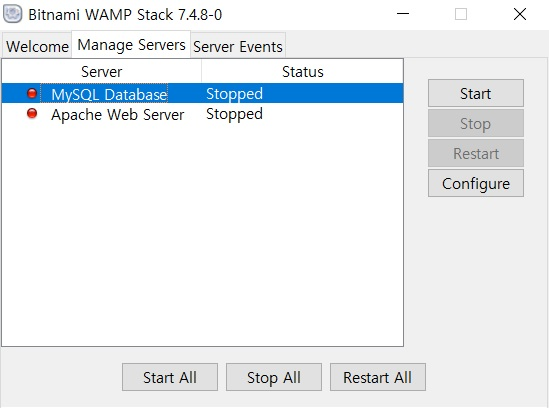
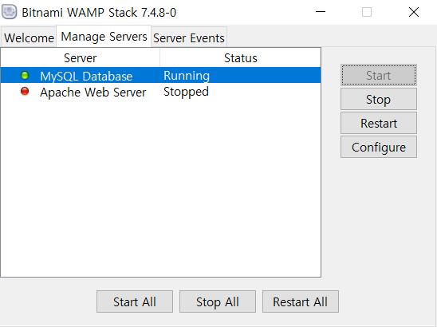
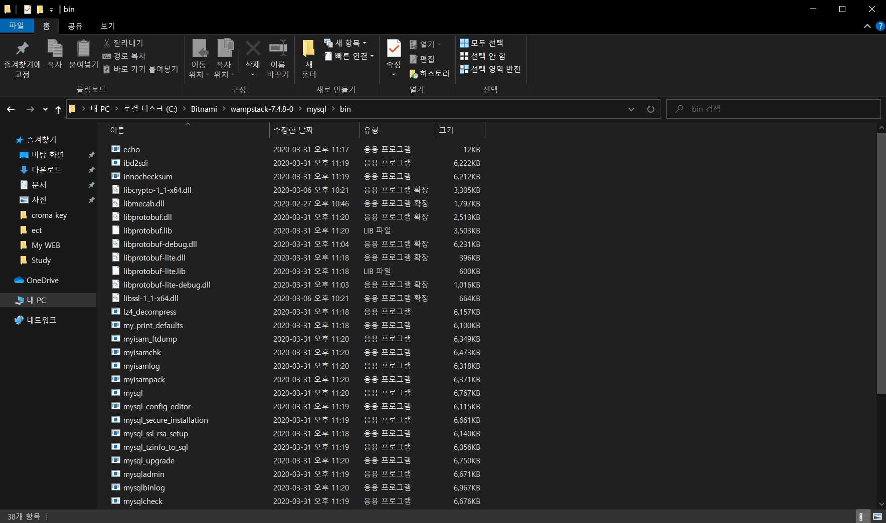
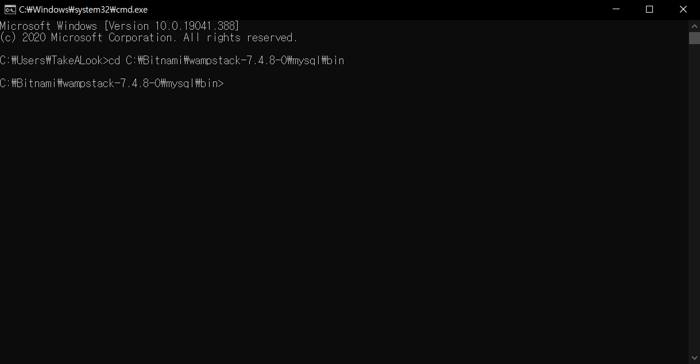
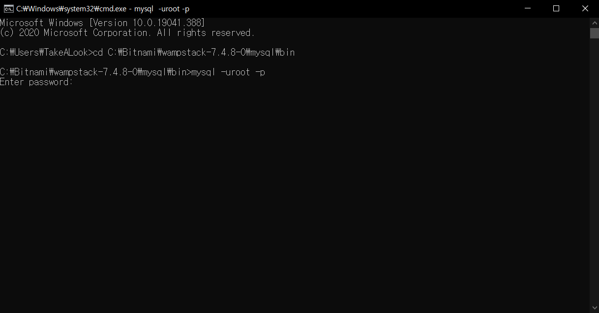
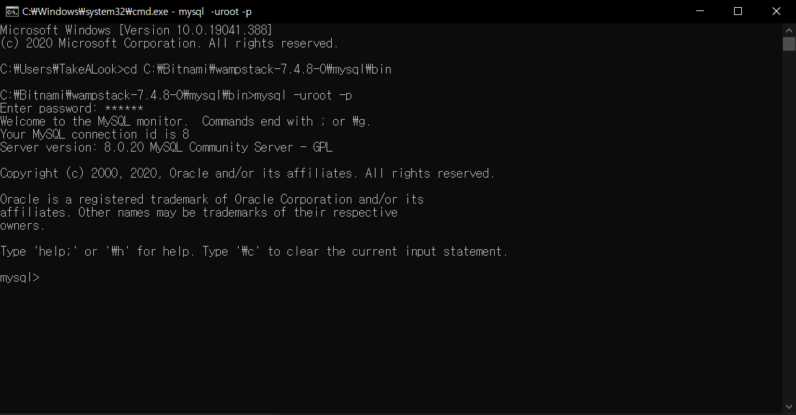

My SQL은 DB(database)의 일종으로, SQL 언어를 중심으로 이루어져있다. DB의 역할은 데이터를 서버에 저장하고 분류나 수정, 관리, 분석 등 data의 전반적인 것을 관리하는 것이다.
대표적인 DB로는 Oracle, mongoDB, My SQL 등 많은 DB가 있다. 그중 이번에 필자가 공부한 것은 My SQL이다. 이유는 간단하다. 일단 무료이기 때문에 부담이 없고, 현 IT업계에서 점유율이
1~2등을 왔다갔다하는 유명한 DB이기 때문이다. 참고로, Oracle의 경우 기업을 상대로한 DB이기에 어마무시한 금액을 사용료로 요구한다. 또, My SQL과 Oracle은 관계형 DB 라는 형식을 취하고 있는데,
단순하게 엑셀과 비슷한 구조지만, 엑셀보다는 좀 더 전문성을 띄고, 기능을 사용함에 있어 자유롭다. 이와 다르게 mongoDB는 문서지향 DB라는 방식인데, 이는 기회가 되면 자세히 설명하도록 하겠다.
요약해서 정리한다면,
관계형 DB --- [유로]Oracle
관계형 DB --- [무료]My SQL
문서지향 DB --- [무료]MongoDB 이렇게 분류하면 된다.
2.DataBase
DB(database)는 Back-end 분야의 중심 기술이다. 사실, DB는 단어 그대로 해석하면 data 저장소로만 이해되지만, 사실 server 관리에 있어 매우 중요한 요소중 하나다. Back-end server 구축의 중심이 되는
Node.JS나 Python의 Django, Ruby등의 언어로 server를 구축한다면, 해당 server에 저장되는 data들을 관리할 때 사용하는 것이 DB인 것이다. 예를들어, WBE이 은행과 관련이 있다면, 고객들의 개인정보를 주고받는 곳이
server인 것이고, 그 내용들을 기록하여 관리하는 것이 DB 라고 생각하며 편하다. 고객들의 개인정보는 보안이나 data관리가 중요하기 때문에 체계적인 관리가 필요하고, CRUD라는 형식을 좀 더 활용하기 위해서는 필수인 기술이라고 보면 된다.
이렇게만 말하면 매우 어렵고, 단순 data 저장하는 것이 아니냐고 할수있겠지만, 다른 방식으로도 활용가능하다. 또 다른 예를들어, 쇼핑몰을 운영한다고 하자. 그 쇼핑물의 매출과 수입 지출을 DB로 관리한다면, 단순 엑셀에 기록하는 것보다 훨씬
여러가지 방면으로 분석하기 좋다. 엑셀은 보안문제나 최대 용량 등의 제한사항이 있지만, DB는 그런 제한사항을 뛰어넘은 기술이기 때문이다. 당연히 엑셀에서는 못하는 것을 DB에는 명령어만 잘 활용한다면 할수있다.
My SQL 기본 문법
본 내용에 들어가기 전에 한 가지 설명하자면, SQL은 Back-end계열에서는 HTML이라 부를 정도로 쉬운 문법이다. 설명을 읽는것보다는 직접 실습해보기를 바란다.
"My SQL 실행하기"
우선 주의해야하는 것이 하나있다. 필자는 window 10을 사용하기 때문에 설명이 macOS 나 Linux와 다를수있다.
또, 한 가지 팁을 주자면 window는 'Bitnami WAMP'를 이용하여 My SQL을 설치하면 편하게 할수있다.
필자가 말한 'Bitnami WAMP'를 이용하여 My SQL을 설치했다면, 기본적으로 자동으로 My SQL server가 실행되어 있는 상태가 되지만, 만약 그렇지 않다면, 'Bitnami WAMP Stack Sanager Tool'을 이용하여 server를 실행시키면 된다. 아래 사진은
'Bitnami WAMP Stack Sanager Tool'에 대한 이용법이다.
 'Bitnami WAMP Stack Sanager Tool'를 실행시켜서 Manage Server 탭에 들어오면 이런 화면이 뜬다. 여기서 My SQL Database를 선택하고 Start를 누르면 서버가 가동된다.
 이런 상태가 된다면 My SQL을 이용하기 위한 준비는 끝났다. 참고로 Apache Web server는 무료로 제공되는 서버엔진이다. 하지만 Node.JS와 같은 언어로 server 구축을 할수있다면 사용할일이 없다.
이제 본격적으로 My SQL을 실행하는 법을 알아보자. 우선 처음에 My SQL을 설치할때 디렉토리를 잘 기억해두길 바란다. 디렉토리를 모르면 My SQL을 실행시킬수가 없다.
만약 디렉토리를 모르겠다면, 아래 사진과 같이 직접 찾아야한다.
 여기서 주의할 점은 mysql\bin 폴더를 찾는 것이다. 이 폴더를 찾았다면 디렉토리를 ctrl+c로 복사한다. 디렉토리를 복사했다면 window key + r 을 눌러 'cmd'를 실행한다. 실행시키면 아래 사진과 같은 화면이 뜬다.
이 화면에서 아까 복사한 디렉토리로 변경을 해줘야한다. 명령어는 'cd' change directory의 약자다. 디렉토리를 변경하면 아래 사진과 같은 화면이 된다.
 이 상태에서 드디어 대망의 My SQL을 실행해보자. 명령어는 mysql -uroot -p 다. 입력하면 아래와 같은 화면이 된다.
 이렇게 비밀번호를 입력하라고 하는데, 이때 이 비밀번호는 My SQL을 설치할때 입력한 비밀번호이다. 만약 입력을 하지않았다면 그냥 Enter를 입력하자. 이렇게 비밀번호까지 입력하면 아래와 같은 화면이 되며 실행된다.
 이런 화면이 뜨면 성공적으로 My SQL가 실행 되었다는 뜻이다.
조금 보충설명을 하자면, 실행할때 사용한 명령어는 mysql -u(사용할 계정) -p 이다. 위의 과정에서 사용한 [root]는 관리자 계정으로 모든 권한을 가지고있다.